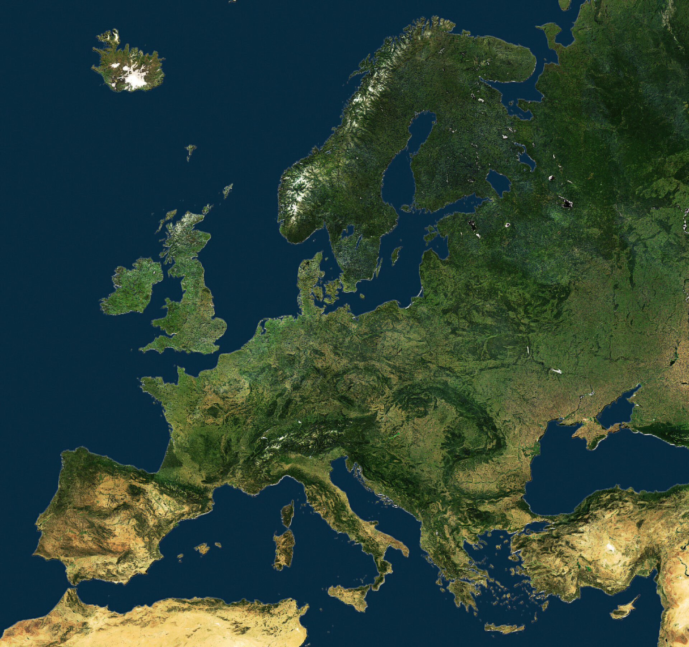
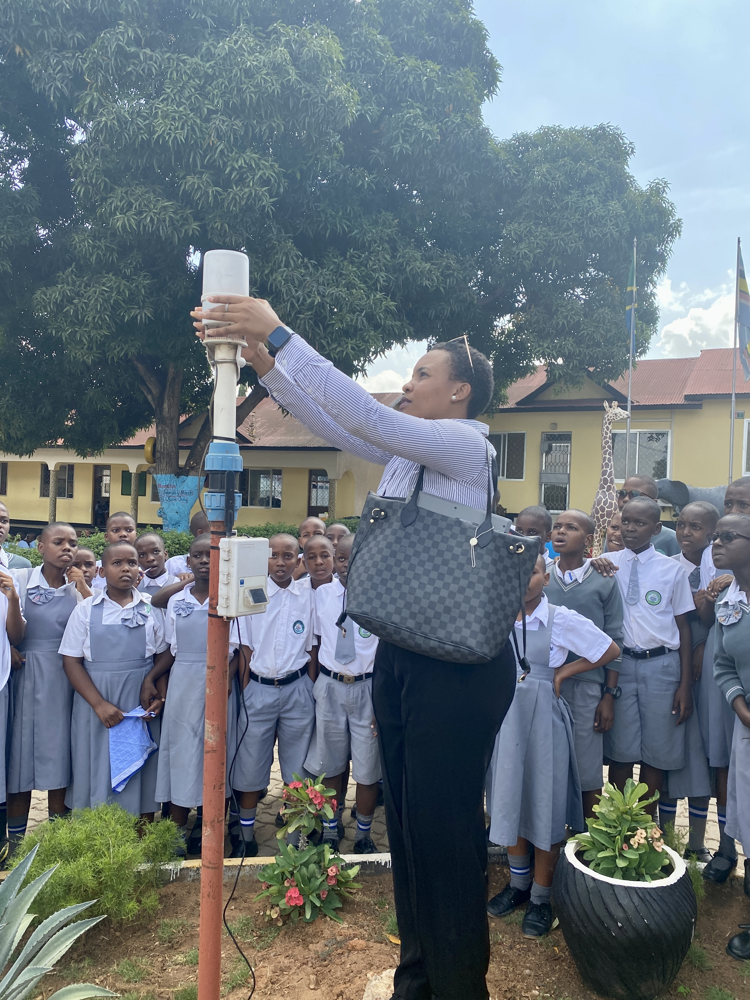

📚
Атлас
Структурована карта з легендою та масштабом.
Тема КТП: Сучасні друковані та електронні джерела географічної інформації. Особливості організації власних географічних спостережень. Експрес-тест 1.



Не шукаємо «головне джерело». Шукаємо спосіб перевірки.
Ви плануєте маршрут. Яке джерело «правильне»? Чи можна вирішити це без додаткової перевірки?
Наприкінці повернемося сюди й перевіримо, чи змінився ваш алгоритм.
Оберіть джерела, які реально допоможуть відповісти на запитання.
Структурована карта з легендою та масштабом.
Може швидко оновлюватися, але залежить від джерела даних.
Показує реальний вигляд поверхні на момент знімання.
Дає дані з конкретного місця, але охоплює малу територію.
Може бути сигналом, але без автора, дати й перевірки — слабкий доказ.
Корисна для порівняння змін, але ризиковано використовувати як «поточну».
Добре показує історичні зміни, якщо відомі походження й дата матеріалу.
Сильне, якщо записані місце, час, прилад, одиниця та умови.
Карта — джерело інформації, але відповідь залежить від масштабу, шару й дати.
Оцініть джерело від 1 до 3 зірок. Важлива не «форма» джерела, а його паспорт.
Є установа-власник, дата оновлення — минулий місяць, масштаб і легенда вказані.
Невідомо, хто зробив, коли, з якого сервісу й у якому масштабі.
Автори й легенда відомі, для фізичних об’єктів корисний, але нова забудова могла змінитися.